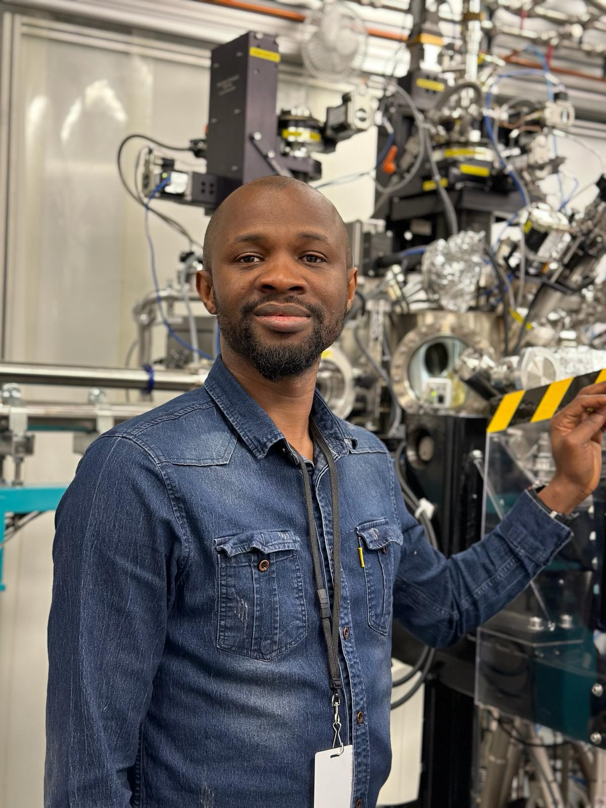

About Me
Bio
Here's a short bio about me. ...
Read MoreMission Statement
As I embark on the journey of understanding the electronic properties of advanced materials, my mission is to push the boundaries of scientific knowledge and innovation. I am driven by a relentless curiosity about the world at the atomic level and a profound belief in the power of research to solve complex challenges. My work with synchrotron soft X-ray techniques and computational models is not just a career path; it's a reflection of my dedication to contributing to sustainable technological advancements.... I value collaboration, integrity, and the pursuit of excellence. These principles guide my approach to research, ensuring that my work is not only groundbreaking but also conducted ethically and in partnership with peers across disciplines. I am committed to sharing my findings openly, believing that knowledge grows exponentially when shared. Beyond my academic and professional goals, I strive to inspire the next generation of scientists. I seek to demonstrate that perseverance, creativity, and a collaborative spirit can lead to discoveries that change our understanding of the world. My mission extends to my personal life, where I aim to live consciously and sustainably, respecting the intricate balance of our ecosystem. In every endeavor, I am guided by a vision of a world where scientific discovery and technological innovation work hand in hand with environmental stewardship and social responsibility. My mission is to be a catalyst for change, advancing not only my field but also contributing to a better, more informed, and sustainable world.
Read MoreVitae
PROFILE
Motivated, confident with extensive knowledge of research. Exceptional communicator with advanced writing, testing, and problem-solving skills. Dependable, organized and calm under pressure. Having exceptional multitasking and organizational skills, all of which are imperative when working closely with co-workers or other research professionals.
Read More